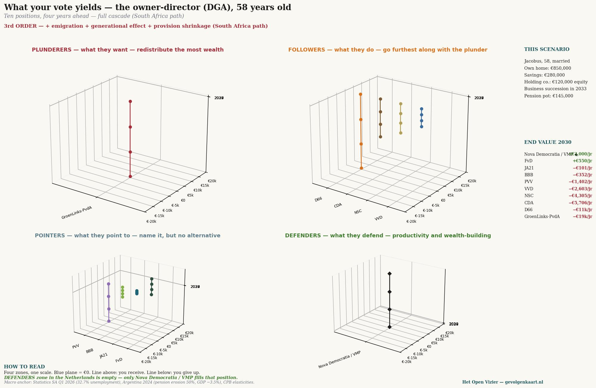
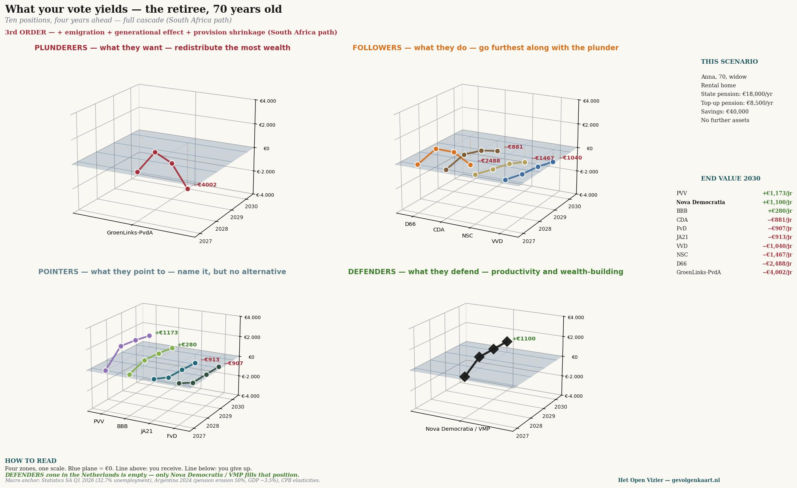
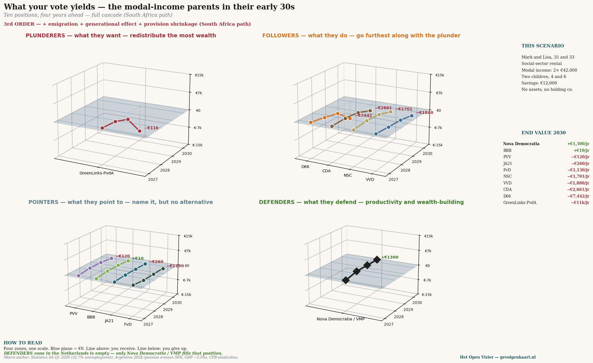

Jacobus, 58 — DGA
Proprietario di impresa familiare, abitazione principale €850.000, risparmi €280.000, BV €120.000, fondo pensione €145.000. Successione aziendale nel 2033.
 Apri a pieno formato →
Apri a pieno formato →
Un giornale sul pensiero senza paraocchi
Per chi vota PRO, GroenLinks-PvdA o D66 — venti posizioni, una matrice
Jacobus van Merksteijn · Malta, giugno 2026

Venti profili personali e aziendali × dieci partiti olandesi. I numeri indicano l'effetto di 3° ordine (% del reddito per i cittadini, % del fatturato per le aziende) nel 2030 — portafoglio diretto più disoccupazione, inflazione, erosione del fondo pensione, emigrazione, effetto generazionale e riduzione dei servizi. Fonti: CBS koopkracht, Statistics South Africa Q1 2026, Argentina 2024, elasticità CPB.
Di seguito, per nove profili personali, la cascata in tre ordini — cosa succede al vostro portafoglio e cosa succede quando le conseguenze si propagano fino al 2030. Cliccate su un grafico per la versione a pieno formato.
Proprietario di impresa familiare, abitazione principale €850.000, risparmi €280.000, BV €120.000, fondo pensione €145.000. Successione aziendale nel 2033.
Apri a pieno formato →
Impresa familiare, 95 vacche, qualità EUR. Terreno e stalla di proprietà, successore in formazione.
 Apri a pieno formato →
Apri a pieno formato →
Cinque anni nei Paesi Bassi con la regola del 30%, due figli, mobile internazionalmente, partner lavora nel settore tech.
 Apri a pieno formato →
Apri a pieno formato →
Entrambi ICT/finanza, reddito congiunto €250.000, abitazione principale €650.000, portafoglio di investimenti €420.000.
 Apri a pieno formato →
Apri a pieno formato →
Unico percettore a reddito medio, partner a casa con tre figli, abitazione principale €420.000, fondo pensione €78.000.
 Apri a pieno formato →
Apri a pieno formato →
Due redditi insieme a livello medio, due figli piccoli, casa di proprietà €380.000, casa vacanze dei nonni.
 Apri a pieno formato →
Apri a pieno formato →
AOW + pensione aziendale €38.000, casa di proprietà estinta (€420.000), risparmi €95.000. Vedova, figli fuori casa.
 Apri a pieno formato →
Apri a pieno formato →
Sclerosi multipla, WIA parziale (€18.500 + integrazione WW), partner lavora, in affitto sociale.
 Apri a pieno formato →
Apri a pieno formato →
Assistenza Wlz completa, contributo personale, pensione interamente destinata all'assistenza. Profilo: costoso nello scenario di 3° ordine.
 Apri a pieno formato →
Apri a pieno formato →
Tre profili — DGA, pensionata, genitori con reddito medio — elaborati in quattro zone: Saccheggiatori, Seguaci, Modificatori, Difensori. Più ci si allontana dal piano blu (€0), più il vostro voto vi porta lontano da dove siete ora.



Fin qui i numeri. Da qui l'analisi: tre convinzioni, verificate con quegli stessi numeri.
Questo articolo non è un attacco. Non è un appello. Non è un tentativo di convincervi.
Questo articolo è una tabella con numeri, seguita da cosa significano quei numeri.
Cosa farne è affar vostro. Vi chiediamo solo una cosa: leggeteli fino alla fine.
Chi vota PRO, GroenLinks-PvdA o D66 lo fa a partire da una concezione morale di sé. Non è detto in modo cinico — è un'osservazione onesta. L'elettore di sinistra non si vede come egoista ma come partecipante a un bene maggiore.
Tre convinzioni sostengono questa concezione di sé:
Prima: i ricchi devono essere impoveriti, perché la loro ricchezza è o immeritata, o creata a spese degli altri. La redistribuzione è giusta.
Seconda: il mio lavoro e il mio reddito sono più al sicuro con la sinistra. I partiti di destra tagliano i posti di lavoro, riducono i salari e danno libero sfogo ai datori di lavoro.
Terza: il sindacato mi protegge, e il partito che sostiene il sindacato mi protegge. La contrattazione collettiva è la mia rete di sicurezza.
Queste tre convinzioni non vengono contestate con argomenti in questo articolo. Vengono verificate con i numeri — tre capitoli, sei scenari, una conclusione. I dati provengono da calcoli basati sulle serie del potere d'acquisto CBS, Statistics South Africa, dati pensionistici argentini ed elasticità del CPB.
Vengono sempre calcolati tre ordini. Il primo ordine è ciò che un partito fa direttamente al vostro portafoglio: imposte, sussidi, AOW. Il secondo ordine aggiunge le conseguenze che derivano da quella politica: disoccupazione, inflazione, erosione del fondo pensione. Il terzo ordine calcola la cascata completa: emigrazione dei facoltosi, effetto generazionale, riduzione dei servizi — il percorso che il Sudafrica ha percorso negli ultimi quindici anni.
Un'ultima osservazione preliminare. PRO è la fusione progressiva in cui GroenLinks-PvdA è confluita nel 2025. Nel calcolo vengono trattati come un continuum, perché il programma è essenzialmente lo stesso.
"Se i ricchi hanno un po' di meno, noi abbiamo un po' di più."
— il ragionamento implicito
L'idea è intuitiva e morale: il patrimonio che si accumula in cima può rifluire verso chi ha meno. Un'imposta patrimoniale del 2 per cento, un box 2 più alto, una tassa sui milionari — sembra giusto e sembra indolore per chi non ha milioni propri. Due scenari mostrano cosa succede davvero.
Jacobus, 58, DGA — cosa gli succede
Jacobus gestisce un'impresa familiare in Twente. Quindici dipendenti, un fatturato di quattrocentomila euro, una casa di proprietà, una BV con €120.000 di patrimonio, un fondo pensione di €145.000 e risparmi che ha accumulato con trent'anni di lavoro. La successione aziendale è pianificata per il 2033. Lui è — per gli standard di PRO/GL-PvdA — un ricco. Per i suoi vicini un imprenditore normale.
{width="6.5in" height="6.296372484689414in"}
Cascata per il DGA — tre ordini, valore finale 2030 per partito. Con PRO/GroenLinks-PvdA la perdita sale da €7.500 (prelievo diretto) a €9.412 (incluso effetto disoccupazione) fino a €18.772 all'anno quando si conta la cascata completa. D66 segue a distanza con −€11.414 all'anno.
Il primo ordine è quanto riportato nel programma elettorale: imposta patrimoniale più box 2 più tassa sui milionari costano a Jacobus circa €7.500 all'anno nel 2030. Un importo che per lui è percepibile ma sopportabile.
Poi inizia la cascata. I suoi clienti diventano più poveri — spendono meno, il suo fatturato cala. I suoi dipendenti diventano più costosi perché la pressione della disoccupazione fa salire i costi del lavoro. Il suo fondo pensione rende meno perché il capitale fugge dal paese e i corsi azionari scendono. Secondo ordine: −€9.412.
Nel terzo ordine la sua BV perde valore — non per prelievo diretto, ma perché l'agevolazione per la successione aziendale è sotto pressione e i lavoratori altamente qualificati si trasferiscono in Svizzera, Germania o negli Stati Uniti. Il piano di successione per il 2033 diventa incerto. Tre dei suoi quindici dipendenti perdono il lavoro nel corso di quattro anni. Jacobus stesso perde €18.772 all'anno — più del doppio del prelievo diretto.
Maarten e Saskia, coppia con doppio reddito, insieme €243.000
Maarten guida un team di dodici persone in un'azienda manifatturiera olandese. Saskia lavora come responsabile HR in un'azienda di servizi internazionale. Tre figli, casa di proprietà da €1,1 milioni a Bussum con un mutuo di €420.000. Risparmi e investimenti insieme per oltre €400.000. Per l'elettore PRO: ricchi. Per loro stessi: lavoratori senza sosta, altamente tassati, con poco tempo libero.
{width="6.5in" height="6.154311023622047in"}
Cascata per la coppia con alto reddito. Il prelievo diretto con PRO/GL-PvdA: €11.500 all'anno. La cascata completa: quasi €37.000 all'anno — quindici per cento del reddito familiare congiunto.
Nel primo ordine perdono €11.500 all'anno per l'aliquota massima, box 3 e la tassa sui milionari. È considerevole ma sopportabile.
Nel terzo ordine si aggiunge: i loro investimenti si volatilizzano, il tasso del loro mutuo sale per la fuga di capitali, i loro figli si trovano di fronte a un'istruzione privata in contrazione. E — cosa cruciale — per loro l'opzione di emigrare è reale. Maarten può lavorare a Francoforte o a Zurigo. Anche Saskia. Quando la perdita supera i €30.000 all'anno, iniziano a fare i conti. E anche molte migliaia come loro.
Cosa dicono i numeri
Quando Jacobus e Maarten/Saskia insieme contribuiscono €56.000 all'anno in meno all'economia olandese, quel denaro non scompare da loro per andare all'assistenza sociale. Scompare verso la Svizzera, verso gli Stati Uniti, verso Singapore. Non torna mai più. La base fiscale si contrae. L'assistenza sociale diventa più magra — non più ricca.
Questo non è ideologia. Questa è la serie numerica del Sudafrica tra il 2010 e il 2026. È stata introdotta l'imposta patrimoniale, il capitale è fuggito, la disoccupazione è cresciuta al 32,7 per cento, la disoccupazione giovanile al 60,9 per cento. La povertà che si voleva combattere con la redistribuzione è peggiorata.
"La VVD mi licenzia. PRO/GL-PvdA mi protegge."
— il ragionamento implicito
L'idea è chiara: i partiti di destra sono più vicini ai datori di lavoro, e i datori di lavoro vogliono il personale il più economico possibile. I partiti di sinistra sono più vicini ai lavoratori dipendenti, alzano il salario minimo, proteggono la WW, esigono contratti a tempo indeterminato. Due scenari mostrano cosa succede quando perdete il lavoro e quando mantenete una famiglia come unico percettore di reddito.
Tom, 45, disoccupato dopo la chiusura di un'azienda
Tom ha lavorato diciotto anni in un'azienda di lavorazione dei metalli a Doetinchem. L'azienda ha chiuso nel 2026 — i committenti tedeschi se ne sono andati, il portafoglio ordini è vuoto. Tom ha una WW pari al 70 per cento del suo ultimo stipendio di €52.000. Ha un mutuo di €280.000 sulla sua casa, un figlio di dodici anni e €25.000 sul conto risparmio. Crede che PRO/GL-PvdA lo proteggerà.
{width="6.5in" height="6.296372484689414in"}
Cascata per il disoccupato Tom. La differenza tra il primo ordine (+€1.200) e il terzo ordine (molto profondamente negativo) è drammatica — perché rientra esattamente nel gruppo che per primo non trova un nuovo lavoro quando aumenta la disoccupazione.
Nel primo ordine Tom ne trae beneficio: PRO/GL-PvdA aumenta la sua WW di €1.200 all'anno, prolunga la durata, offre formazione. Questo è fattualmente corretto. Sulla carta sta meglio.
Ma il secondo ordine rende la sua situazione critica. La pressione della disoccupazione che segue all'aumento del carico fiscale — il capitale fugge, gli imprenditori non investono, i clienti comprano meno — rende per Tom più difficile che mai trovare un nuovo lavoro. Per ogni punto percentuale cumulativo di disoccupazione in più, questo gli costa in media quattro mesi in più senza lavoro. Questo equivale a €6.000 per punto percentuale cumulativo.
Nel terzo ordine Tom diventa una statistica. Dopo due anni di WW, la sua indennità passa all'assistenza sociale. Il suo mutuo diventa insostenibile per gli interessi aumentati. La sua competenza professionale si deteriora per inattività. Rientra nella categoria 'mismatch' — lavoratori le cui competenze non corrispondono più al mercato. Con PRO/GL-PvdA Tom perde nel lungo termine più del suo reddito annuo.
Pieter, 42, unico percettore di reddito con tre figli
Pieter lavora come capogruppo in un panificio industriale. €58.000 lordi all'anno. Sua moglie Marije si occupa dei loro tre figli di otto, undici e tredici anni. Sono una classica famiglia monoreddito — un modello che è stato respinto da tutti i partiti tranne CDA, BBB e PVV come superato.
{width="6.5in" height="6.127155511811024in"}
Cascata per l'unico percettore con tre figli. Con PRO/GL-PvdA perde nel terzo ordine €15.252 all'anno — quasi ventisei per cento del suo reddito annuo. D66 segue con €10.279 di perdita. Con CDA e BBB ci guadagna.
Il primo ordine di PRO/GL-PvdA per Pieter: meno €1.000 all'anno. Il credito d'imposta generale per sua moglie non lavoratrice viene ulteriormente ridotto — un processo che PRO/GL-PvdA e D66 vogliono accelerare in nome dell'"individualizzazione".
Il secondo ordine: una famiglia di cinque è sensibile all'inflazione. Cibo, vestiti, sport, vacanze — i €240 per punto indice di spese aggiuntive tagliano direttamente il reddito disponibile. Il rischio di disoccupazione per Pieter è inoltre doppiamente pesante: in caso di licenziamento cade il cento per cento del reddito familiare, non come per i doppi percettori la metà.
Il terzo ordine: il suo mutuo diventa più pesante per i tassi aumentati, la sua maturazione pensionistica ristagna, e i suoi tre figli sono esattamente la generazione che subirà la cascata nella sua piena portata. Per Pieter: meno €15.252 all'anno — quasi un quarto del suo stipendio lordo. Non attraverso un'imposta diretta, ma attraverso ciò che il suo voto innesca nella cascata.
Cosa dicono i numeri
La convinzione che la sinistra protegga il lavoratore dipendente è corretta a livello di primo ordine. Il salario minimo aumenta. La WW viene prolungata. L'assistenza sociale diventa più generosa.
Ma il secondo e terzo ordine mostrano cosa succede ai posti di lavoro stessi. La disoccupazione aumenta per la fuga di capitali e la riduzione degli investimenti. Le persone che perdono il lavoro non ne trovano più uno nuovo. L'unico percettore che ha ancora lavoro vede il suo potere d'acquisto erodersi dall'inflazione.
Un'indennità più alta in un mercato del lavoro svuotato non è protezione. È una deviazione sulla strada verso l'assistenza sociale.
"Insieme siamo più forti. La contrattazione collettiva è la mia rete di sicurezza."
— il ragionamento implicito
Per chi è membro di FNV, CNV o un sindacato di settore, l'iscrizione si sente come un'assicurazione. Il sindacato lotta per il vostro contratto collettivo, la vostra pensione, le vostre condizioni di lavoro. PRO/GL-PvdA e in misura minore D66 stanno dalla sua parte. Due scenari mostrano cosa offre davvero quella protezione nella cascata.
Sandra, 38, madre single all'assistenza sociale
Sandra lavorava come assistente domiciliare fino al burnout nel 2024. Da allora è all'assistenza sociale, con un figlio di otto anni. Il suo reddito netto — assistenza sociale più sussidio affitto più sussidio per i figli più sussidio sanitario — è circa €21.000 all'anno. Lei è il volto di chi PRO/GL-PvdA dice di voler aiutare.
{width="6.5in" height="6.296372484689414in"}
Cascata per Sandra. L'inversione qui è la più netta: nel primo ordine PRO/GL-PvdA le dà €1.300 in più all'anno. Nel terzo ordine perde €7.555 — più di un terzo del suo reddito annuo. Il partito che le promette di più la danneggia di più.
Il primo ordine di PRO/GL-PvdA per Sandra: più €1.300 all'anno. Assistenza sociale più alta, sussidio per i figli più generoso, sussidio sanitario migliore. Questa non è una bugia — è nel programma e viene mantenuta non appena il partito è in una coalizione.
Il secondo ordine è devastante per chi vive di spese fisse. Sandra ha il 90 per cento del suo reddito vincolato in affitto, energia e spesa. L'inflazione la colpisce doppiamente: la sua indennità aumenta con l'indicizzazione salariale, le sue spese con l'indicizzazione dei prezzi. La differenza è un impoverimento strisciante che diventa più grande ogni mese. Inoltre l'uscita dall'assistenza sociale verso il lavoro diventa praticamente impossibile: i settori occupazionali in cui un giorno potrebbe rientrare si contraggono.
Il terzo ordine completa il ciclo. L'assistenza sanitaria si fa scarsa con il deficit di bilancio, la franchigia aumenta, i dispositivi richiedono un contributo personale. L'istruzione per suo figlio diventa più povera — meno lezioni private, meno supporto. Il banco alimentare diventa inevitabile. Sandra perde nella cascata €7.555 all'anno — più di un terzo del suo reddito. Con GL-PvdA. Il partito che la sostiene.
Linda, 47, malata cronica (SM)
Linda ha lavorato vent'anni come pianificatrice logistica. La sclerosi multipla l'ha costretta a smettere nel 2022. Indennità WIA: 75 per cento del suo ultimo stipendio di €42.000 = €31.500 all'anno. Franchigia sanitaria annua al massimo, farmaci costosi per gestire la malattia, dispositivi, assistenza familiare da parte di sua sorella. Linda è colei che nessun partito oserebbe abbandonare. Eppure la cascata mostra cosa succede effettivamente.
{width="6.5in" height="6.296372484689414in"}
Cascata per Linda, paziente con SM. PRO/GL-PvdA le offre nel primo ordine €1.400 in più. Nel terzo ordine perde €9.842 all'anno — più del 31 per cento della sua indennità. Questo non è un'astrazione, è aspettare una sedia a rotelle che non arriva.
Primo ordine per Linda con PRO/GL-PvdA: più €1.400 all'anno. Indennità più alta, franchigia ridotta, fisioterapia gratuita ripristinata. Un partito che la prende sul serio.
Secondo ordine: l'inflazione incide sulle sue spese fisse e sui costi sanitari non rimborsati. I farmaci diventano più cari, i dispositivi diventano più cari. Con la disoccupazione nel suo ambiente l'assistenza familiare viene parzialmente meno — sua sorella ha i propri problemi. Il vantaggio di €1.400 è già scomparso nel secondo anno.
Terzo ordine: l'assistenza sanitaria diventa strutturalmente più scarsa con il deficit di bilancio. Le liste d'attesa crescono. I dispositivi durano più a lungo di quanto sarebbe opportuno. I caregiver non ci sono più — si sono trasferiti o sono essi stessi in difficoltà. Linda perde €9.842 all'anno. Non per un taglio diretto, ma per ciò che il suo voto ha messo in moto.
Cosa dicono i numeri
Il sindacato lotta per i salari contrattuali e i diritti pensionistici. Questo ha valore. Ma il contratto collettivo vale solo quando c'è occupazione. La pensione vale solo quando il fondo pensione rende. L'indennità vale solo quando la base fiscale è intatta.
Nella cascata tutti e tre si contraggono. L'accordo salariale di domani è vuoto quando la base industriale se ne va oggi. La pensione che FNV ha conquistato vale un decimo in meno quando i mercati azionari crollano per la fuga di capitali. L'assistenza sociale che PRO/GL-PvdA aumenta compra meno quando l'inflazione fa salire i prezzi il doppio.
La protezione al primo ordine non è protezione quando il secondo e terzo ordine vengono minati. È l'illusione della protezione. E le illusioni costano denaro — in questo caso più di un terzo di quanto Sandra e Linda percepiscono.
Sei persone. Tre ordini. Tre convinzioni.
Jacobus e Maarten/Saskia secondo la prima convinzione dovrebbero essere impoveriti. Nella cascata vengono impoveriti — ma trascinano con sé l'intero paese nella loro caduta. La loro riduzione del contributo di €56.000 all'anno non è un trasferimento a Sandra. È una perdita, aspirata altrove.
Tom e Pieter secondo la seconda convinzione sarebbero meglio protetti con la sinistra. Tom perde più del suo reddito annuo per la disoccupazione prolungata. Pieter perde un quarto del suo stipendio per ciò che accade ai suoi colleghi e per ciò che sua moglie non riesce più a compensare con il credito d'imposta.
Sandra e Linda secondo la terza convinzione avrebbero guadagnato di più. Perdono nella cascata un terzo del loro reddito. Non perché PRO/GL-PvdA le danneggi — quell'intenzione è assente — ma perché la politica demolisce la base su cui poggiano le loro indennità.
La tabella numerica complessiva
Per chi vuole vedere tutti i numeri in un unico posto: di seguito il risultato del terzo ordine per scenario, per partito, nel 2030. Venti situazioni di vita, dieci posizioni. La mappa delle conseguenze in una matrice.
{width="7.0in" height="5.342049431321085in"}
La mappa delle conseguenze — tutti i venti scenari contemporaneamente. Per i cittadini: percentuale del reddito annuo. Per le aziende: percentuale del fatturato. Leggete verticalmente per valutare un partito; leggete orizzontalmente per trovare la vostra situazione. Il colore è la conseguenza del vostro voto.
Emerge un pattern. La colonna di sinistra — PRO/GL-PvdA — è per quasi ogni gruppo profondamente rossa. La colonna di destra — Nova Democratia/VMP, un modello di riferimento meritocratico — è per ogni gruppo verde. Non perché uno favorisca l'altro, ma perché un modello arreca danni e l'altro no.
L'elettore PRO si trova di fronte a un paradosso: il risultato del suo voto è negativo per quasi ogni obiettivo che dice di perseguire. Per chi vuole aiutare. Per il paese in cui vive. Per il proprio futuro.
Cosa questo non è
Questo articolo non è un appello per un altro partito. Non è una campagna mascherata. Non è uno spot pubblicitario per Nova Democratia — quella vi compare come modello di riferimento, non come alternativa sulla scheda elettorale (perché non c'è).
Quello che questo è: il tentativo di mettere tre credenze di fronte a tre ordini di numeri. Senza urlare. Senza accuse. I numeri ci sono. Le fonti sono indicate di seguito. Siete liberi di respingerle — ma allora dovete spiegare perché la cascata osservata in Sudafrica, osservata in Argentina, in ogni paese che ha percorso questo cammino, non si verificherà nei Paesi Bassi.
È una domanda pertinente. Pensiamo che non esista una risposta pertinente.
I numeri in questo articolo sono stati calcolati con un modello a tre fasi.
Il primo ordine proviene dai programmi elettorali delle dieci posizioni, tradotti nella posizione finanziaria dello scenario. Imposta patrimoniale, box 2, box 3, collegamento AOW, sussidi, IVA — tutto da materiale pubblicato.
Il secondo ordine combina quattro effetti macro con il cosiddetto 'indice di pressione' per partito. Per ogni punto indice la disoccupazione cambia di 0,018 punti percentuali all'anno (calibrato sui dati argentini del 2024: 7,7 per cento in crescita verso 8,5 per cento in un anno), l'inflazione di 0,055 per cento sopra l'obiettivo della BCE, il rendimento del fondo pensione di −0,033 per cento. Per GL-PvdA con indice di pressione 45, ciò significa: 0,8 punti percentuali di disoccupazione in più all'anno, 2,5 per cento di inflazione in più, 1,5 per cento di rendimento pensionistico più basso.
Il terzo ordine aggiunge effetti emigratori, effetti generazionali (figli-disoccupati, genitori-che-aiutano) e riduzione dei servizi. L'emigrazione è stimata in 8.000 percettori di reddito elevato per €10 miliardi di pressione strutturale all'anno, calibrata sul deflusso sudafricano 2010–2026.
Le ancore macro sono:
Il modello è stato deliberatamente mantenuto trasparente — nessuna black-box, nessuna assunzione nascosta. Chi vuole riprodurre o contestare i calcoli può farlo. Il file Excel aperto sarà disponibile su gevolgenkaart.nl non appena la Mappa delle conseguenze sarà attiva come piattaforma.
SCRITTO DA JACOBUS VAN MERKSTEIJN CON SUPPORTO EDITORIALE AI
HET OPEN VIZIER — OPENVIZIER.ORG
LA MAPPA DELLE CONSEGUENZE — GEVOLGENKAART.NL
GIUGNO 2026
Quattro domande a voi stessi. Nessun partito viene raccomandato. Nessuna risposta è giusta o sbagliata. Cosa farne è affar vostro.
Quale delle tre convinzioni riconoscete come vostra motivazione personale?
Impoverire-i-ricchi / Mio-lavoro-più-sicuro / Sindacato-mi-protegge / nessuna delle tre
Quale profilo personale sopra assomiglia di più alla vostra posizione?
Scegliete il profilo più vicino a voi — per età, reddito, famiglia, professione.
Quale colonna della matrice rappresenta il partito per cui votereste quest'anno?
Trovate la colonna, guardate verso il basso verso la riga del vostro profilo.
Quel numero corrisponde a quello che vi aspettavate?
Se sì: allora votate consapevolmente per quel risultato. Se no: questo è il primo momento in cui lo constatate voi stessi.
Avete finito. Quello che fate ora è vostro.

Jacobus van Merksteijn
Direttore di Het Open Vizier. Imprenditore, sviluppatore di innovazioni industriali e di governance (Carbon-Alert Ltd, TerraClean Ltd, GuardSkin Ltd). Scrive di questioni sistemiche economiche, ecologiche e politiche dall'esperienza diretta con le macchine decisionali di Bruxelles e dell'Aja.